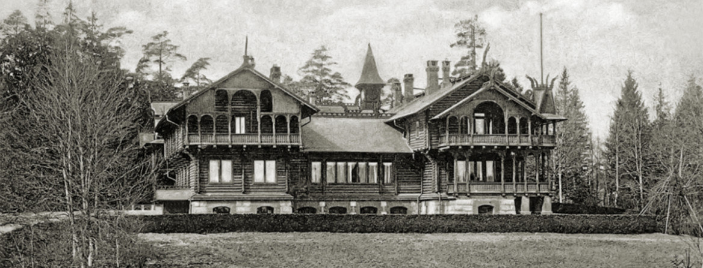
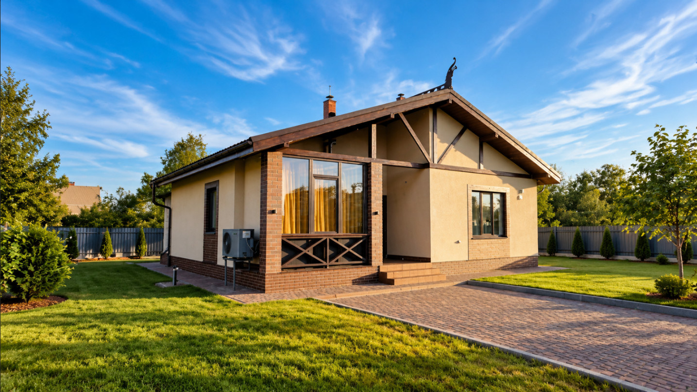

👨👩👧👦
Семейные встречи
Для близких, которые хотят собраться вместе и провести несколько незабываемых дней.
Место, где встречаются близкие. Уютный гостевой дом для семейных встреч и отдыха на Балтийском побережье.
«Приют Дракона» расположен в Зеленоградске — приморском городе на Балтийском море. Мы рады гостям, которые приезжают отдыхать и встречаться с родными из разных городов и стран.
Для близких, которые хотят собраться вместе и провести несколько незабываемых дней.
Дом сдаётся только целиком, без посторонних гостей. Шесть основных мест, до восьми человек по согласованию и с доплатой.
Прогулки по Зеленоградску, морской воздух и возможность провести время с семьёй.
О месте, где встречаются родные сердца.
Хотите, верьте, хотите, нет, но дело было так! Наверное…
Когда-то из Норвегии в Восточную Пруссию прибыл необычный охотничий замок с драконьими головами на крыше. А вслед за ним, по нашей легенде, прилетели настоящие драконы. Некоторым так понравились крыши старого Кранца, что они остались здесь навсегда. Один из них нашёл приют и на нашем доме.
Давным-давно, когда в России женщины носили кокошники еще не ради хайпа, а лапти еще не вышли из моды, где-то далеко, далеко в Пруссии жил да был один король, и звали его Вильгельм II. В обширных его владениях было много лесов, и водились там и благородные олени и кабаны и много зверья по меньше.
Король регулярно охотился в Роминтенской пуще . Он впервые посетил этот лесной массив (ныне Красный лес на границе Калининградской области России и Польши) осенью 1890 года и сделал его своими любимыми императорскими охотничьими угодьями.
А поэтому Вильгельм II и решил построить там замок в популярном на тот момент «драконьем стиле». Архитекторы из Осло, Хольм Мунте и его помощники Оле и Сверре, разработали проект.
Здание из бревен было собрано в Норвегии, разобрано и доставлено морем в Кенигсберг, а затем в Тракенен, откуда на лошадях перевезли к месту постройки в Роминтен, где ждал готовый фундамент из камня и кирпича. В след за замком из Норвегии в Пруссию потянулись и драконы.
Пролетая над Куршской косой их внимание привлек уютный старинный городок Кранц и так им понравились здешние остроконечные, черепичные крыши, что несколько драконов на всегда поселилось на них.
К 1893 году охотничий замок был возведен и украшен охотничьими трофеями и характерными для норвежского стиля драконьими головами на коньках крыши. «Стиль драконов» был распространён в западноевропейской архитектуре эпохи модерна.
В Калининградской области к этому стилю относится охотничий замок короля Вильгельма II в Роминтенской пуще. Но есть и примеры и в других регионах России — например, в г.Омске и г.Томске есть похожие.
Узнать «стиль драконов» легко по стилизованным головам на коньках крыш, которые берут начало от украшений на кораблях викингов.
В Зеленоградске драконы приютились на крышах многих домов: ЖК «Морской Дракон» Приморская ул. д4, отель Гранд Монополь Володарского 32, домик на Вокзальной 1к1 ну и конечно на нашей крыше.
Vor langer Zeit, als in Russland Frauen noch Kokoschniks trugen und Bastschuhe noch nicht aus der Mode waren, lebte weit entfernt in Preußen ein Herrscher namens Wilhelm II. In seinen ausgedehnten Wäldern lebten Hirsche, Wildschweine und viele andere Tiere.
Im Herbst 1890 besuchte er erstmals die Rominter Heide, die zu seinem bevorzugten kaiserlichen Jagdgebiet wurde. Deshalb ließ er dort ein Jagdschloss im damals beliebten Drachenstil errichten. Der norwegische Architekt Holm Munthe und seine Mitarbeiter Ole und Sverre entwarfen das Gebäude.
Das Blockhaus wurde in Norwegen aufgebaut, wieder zerlegt und über Königsberg und Trakehnen zum Bauplatz gebracht. Mit dem Schloss kamen der Legende nach auch Drachen aus Norwegen nach Preußen. Als sie über die Kurische Nehrung flogen, entdeckten sie das gemütliche Seebad Cranz.
Seine spitzen Ziegeldächer gefielen ihnen so sehr, dass einige für immer dort blieben. Bis 1893 war das Jagdschloss fertiggestellt und mit Jagdtrophäen und den für die norwegische Architektur typischen Drachenköpfen auf den Dachfirsten geschmückt.
Der sogenannte Drachenstil war Teil der europäischen Architektur des ausgehenden 19. Jahrhunderts. Seine stilisierten Drachenköpfe auf den Dachfirsten erinnern an die Verzierungen der Wikingerschiffe. Ähnliche Motive finden sich auch in anderen russischen Städten, etwa in Omsk und Tomsk.
Auch heute haben Drachen auf den Dächern von Selenogradsk Zuflucht gefunden: am Wohnkomplex „Morskoj Drakon“ in der Primorskaja-Straße 4, am Hotel Grand Monopol in der Wolodarskogo-Straße 32, am Haus in der Woksalnaja-Straße 1k1 – und natürlich auf unserem Dach.

Отдельный одноэтажный дом в западной части Зеленоградска, без общих стен с соседями. До песчаного пляжа около 7 минут пешком, до продуктового магазина — около 4 минут. Рядом остановка пригородного поезда «Ласточка».
Две спальни, кухня-гостиная, санузел и просторная веранда. В одной спальне двуспальная кровать, в другой — двуспальная кровать и диван. В гостиной раскладной диван шириной 160 см. Шесть основных мест, до восьми гостей с доплатой. Одноэтажная планировка, потолки 3 м. Для маленьких гостей имеется детская кроватка и стульчик для кормления.
Большой стол на 8 человек, телевизор, индукционная плита, холодильник, микроволновая печь, чайник, посудомоечная машина, фильтр питьевой воды и кухонные принадлежности. В ванной комнате — ванна, стиральная машина и фен.
Собственный огороженный участок около 600 м² с газоном, веранда на южной стороне и мангальная зона. Во дворе стоянка для двух автомобилей.



Фотографии гостевого дома «Приют Дракона».
Напишите нам желаемые даты, количество гостей и ваши вопросы. Мы сообщим о доступности, стоимости и условиях проживания. Отправка запроса не является подтверждением бронирования.
Адрес: Калининградская область, Зеленоградск, ул. Зелёная, 37
Стоимость, наличие свободных дат и условия отмены уточняются индивидуально.